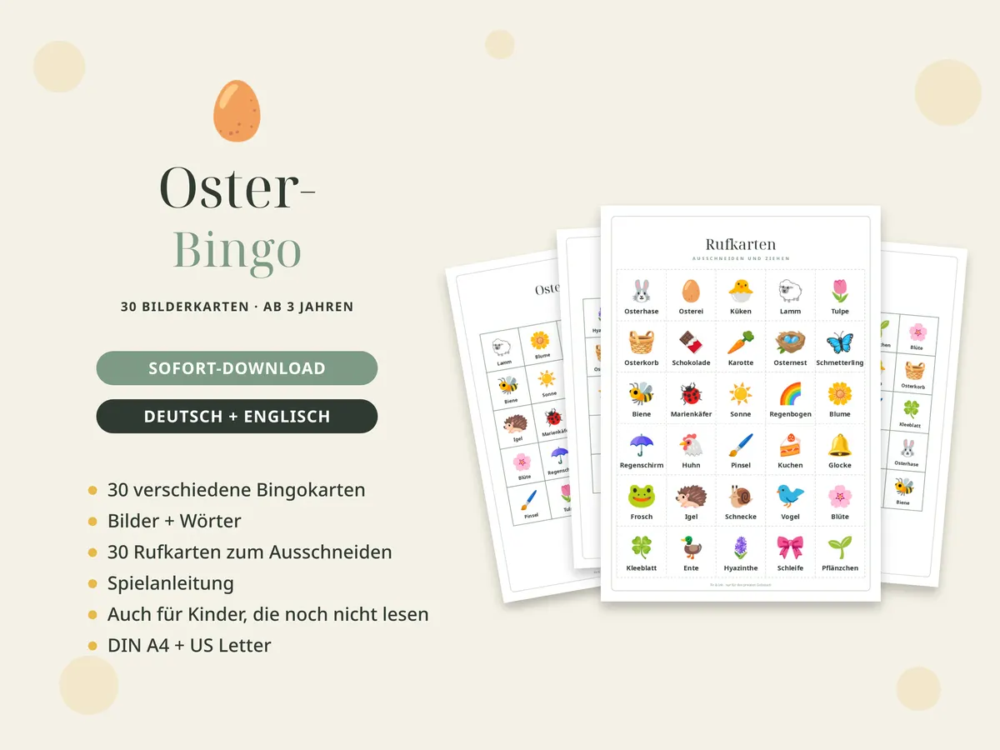

Oster-Schatzsuche für Kinder: Rätsel, Verstecke und Ablauf

Eine Schatzsuche macht aus der Ostereiersuche ein kleines Abenteuer: Statt einfach Eier zu sammeln, lösen die Kinder ein Rätsel nach dem anderen – bis sie das Osternest finden.
So funktioniert die Oster-Schatzsuche
- Jede Rätselkarte beschreibt ein Versteck, zum Beispiel den Kühlschrank oder die Gießkanne.
- Das Kind bekommt die erste Karte. An dem Ort, den das Rätsel beschreibt, liegt die nächste Karte.
- Am letzten Versteck wartet das Osternest – gern mit einer kleinen Urkunde.
Für Kinder von 4 bis 6 Jahren reichen 6 bis 8 Stationen. Ältere Kinder schaffen 10 bis 12 und lesen die Reime selbst.
Gute Verstecke für drinnen
- Kühlschrank, Brotkorb, Besteckschublade
- Sofa-Kissen, Bücherregal, Spielzeugkiste
- Badewanne, Spiegel, Handtuch
- Schuhregal, Jacke an der Garderobe, Fußmatte
Gute Verstecke für draußen
- Briefkasten, Gießkanne, Gartenbank
- Baum, Blumenbeet, Sandkasten
- Fahrrad, Schaukel, Gartenhaus
Drei Rätsel zum Ausprobieren
Hier drin ist es eisig kalt, Milch und Käse machen Halt. Mach die Tür schnell auf und zu – den nächsten Hinweis findest du!
(Kühlschrank)
(Kühlschrank)
Ich trinke Wasser, brauche Licht, doch laufen kann ich leider nicht. Schau unter meinen Topf hinein – da wird der nächste Hinweis sein!
(Blumentopf)
(Blumentopf)
Ich hab eine lange Nase und gieße Blumen, Beet und Rasen. Schau in mich hinein oder darunter – der Hinweis macht dich wieder munter!
(Gießkanne)
(Gießkanne)
Gratis zum Ausprobieren: 6 Rätselkarten für drinnen als PDF
PDF herunterladen
PDF herunterladen
Kostenlos, ohne Anmeldung, nur für den privaten Gebrauch.
Tipps, damit es klappt
- Verstecke die Karten erst, wenn die Kinder schlafen oder draußen spielen.
- Schreib dir die Reihenfolge auf – sonst suchst du am Ende selbst.
- Bei Geschwistern: Jedes Kind liest abwechselnd vor, oder jedes bekommt eine eigene Farbe.
- Bei Regen funktioniert alles auch nur drinnen.
Das komplette Set
Oster-Schatzsuche zum Ausdrucken
32 Rätselkarten in Reimen (20 für drinnen, 12 für draußen), leere Karten, Schatz-Karte, Urkunde und Lösungsliste – auf Deutsch und Englisch.
Ansehen auf Etsy
Oster-Bingo mit Bildern
30 verschiedene Bingokarten mit Bildern – auch für Kinder ab 3, die noch nicht lesen können.
Ansehen auf Etsy